多了哪些牌
 +3
+3 +1
+1 +1
+1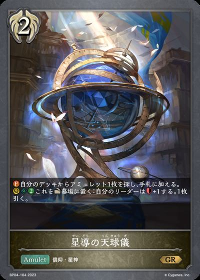
+1 +1
+1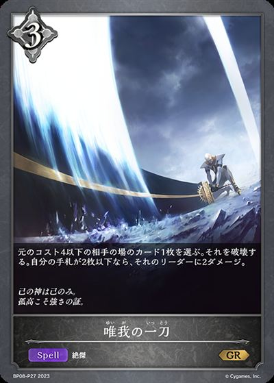
+1 +1
+1 +1
+1 +1
+1少了哪些牌
 -3-2-1
-3-2-1 -1-1-1-1
-1-1-1-1 主BP01-140/EBD04-017/PR-060：ダークオファリング主卡组 × 3
主BP01-140/EBD04-017/PR-060：ダークオファリング主卡组 × 3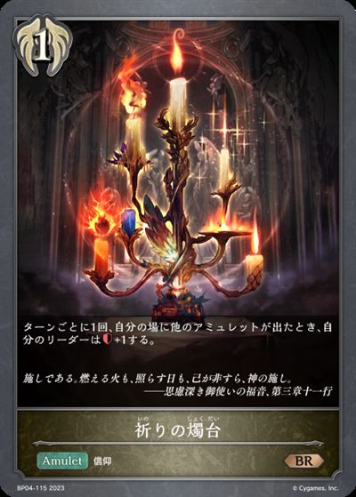
主BP04-115：祈りの燭台主卡组 × 2 主BP15-101/BP15-P21/EBD04-012：悠久の絶望主卡组 × 3
主BP15-101/BP15-P21/EBD04-012：悠久の絶望主卡组 × 3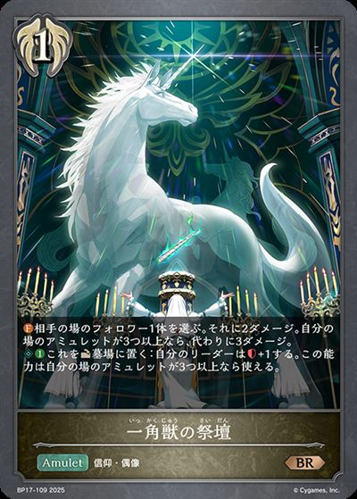
主BP17-109/BP17-P26：一角獣の祭壇主卡组 × 3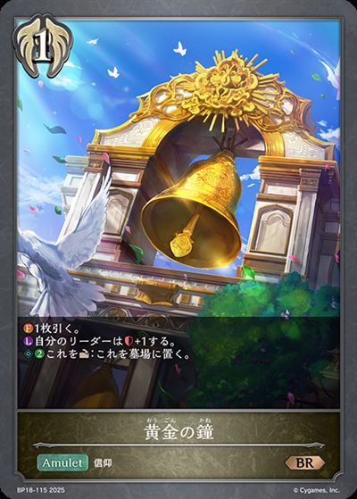
主BP18-115/BP18-P48：黄金の鐘主卡组 × 3主CP01-070/CP01-P52：その背中を越えて主卡组 × 3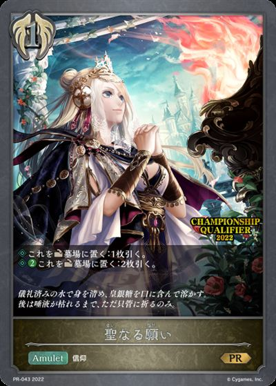
主BP01-133/PR-043：聖なる願い主卡组 × 1 主BP15-111/EBD04-020：聖なるジャッジガベル主卡组 × 3
主BP15-111/EBD04-020：聖なるジャッジガベル主卡组 × 3 主BP15-113/BP15-SL29/BP15-SP02：干絶の飢餓・ギルネリーゼ主卡组 × 3
主BP15-113/BP15-SL29/BP15-SP02：干絶の飢餓・ギルネリーゼ主卡组 × 3 主BP08-092/EBD04-010/PR-258：射殺す輝き主卡组 × 3
主BP08-092/EBD04-010/PR-258：射殺す輝き主卡组 × 3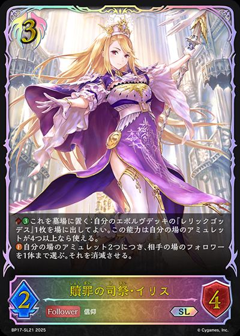
主BP17-091/BP17-SL21/BP17-U08：贖罪の司祭・イリス主卡组 × 3 主BP15-094/BP15-SL24/EBD04-004：絶望の安息・マーウィン主卡组 × 3
主BP15-094/BP15-SL24/EBD04-004：絶望の安息・マーウィン主卡组 × 3 主BP01-131/BP01-P26/EBD04-011/PR-098：テミスの審判主卡组 × 3
主BP01-131/BP01-P26/EBD04-011/PR-098：テミスの審判主卡组 × 3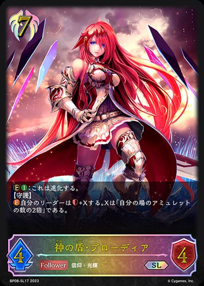
主BP08-087/BP08-SL17/EBD04-006：神の盾・ブローディア主卡组 × 3 主BP13-107/BP13-SL23：ワールドブレイク主卡组 × 1
主BP13-107/BP13-SL23：ワールドブレイク主卡组 × 1 进BP15-095/BP15-SL25/EBD04-005：絶望の安息・マーウィン进化 × 3进BP15-114/BP15-SL30/BP15-U07：干絶の飢餓・ギルネリーゼ进化 × 3
进BP15-095/BP15-SL25/EBD04-005：絶望の安息・マーウィン进化 × 3进BP15-114/BP15-SL30/BP15-U07：干絶の飢餓・ギルネリーゼ进化 × 3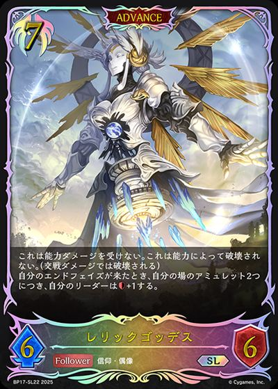
进BP17-092/BP17-SL22：レリックゴッデス进化 × 1+3+1+1
+1+1
+1+1+1+1-3-2-1-1-1-1-1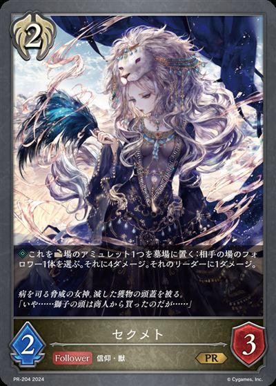
+2 +2+1+1
+2+1+1 +1+1+1+1
+1+1+1+1 +1+1+1-3-1-1-1-1-1-1-1-1+1+1+1+1+1-3-1-1-1-1-1-1
+1+1+1-3-1-1-1-1-1-1-1-1+1+1+1+1+1-3-1-1-1-1-1-1 +1
+1 +1+1+3+3
+1+1+3+3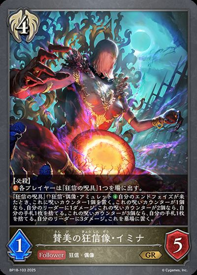
+3+1+1+1+1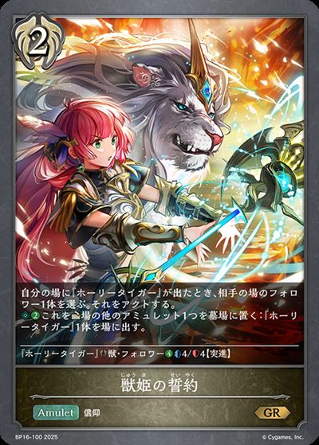
+1-3-2-1-1-1-1-1-1+1+1+1+1+2+2+1+1+1+1+1+1+1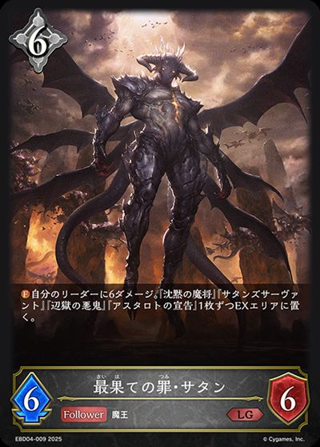
+1-3-1-1-1-1-1-1-1-1 +3
+3 +3+2
+3+2 +2
+2 +2
+2 +2+1+1+1
+2+1+1+1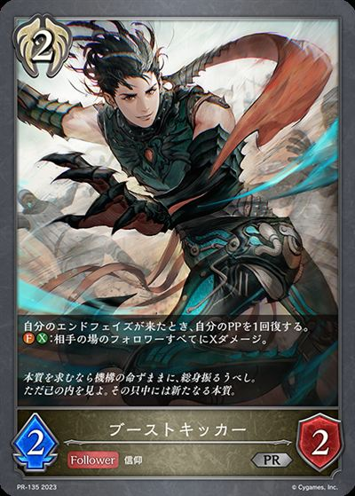
+1+1 +1-3-3-3-3-2-1-1+1+1+1+1+1+1+1+1
+1-3-3-3-3-2-1-1+1+1+1+1+1+1+1+1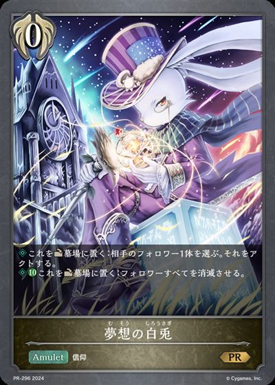
+1-3-3-2-2-1-1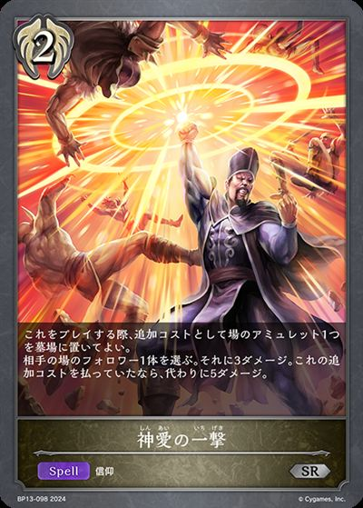
+1+3+1-3-1 +3+3+2+1+1+1+1+1+1+1-3-2-1-1-1-1-1-1-1+1+1+2+2+2
+3+3+2+1+1+1+1+1+1+1-3-2-1-1-1-1-1-1-1+1+1+2+2+2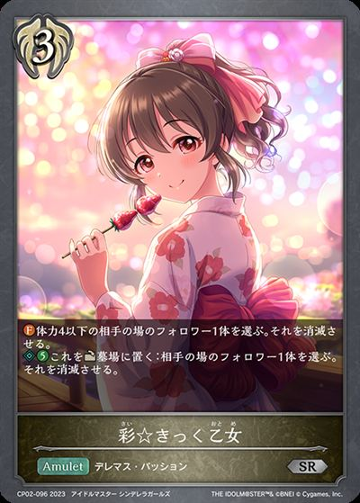
+2+1+1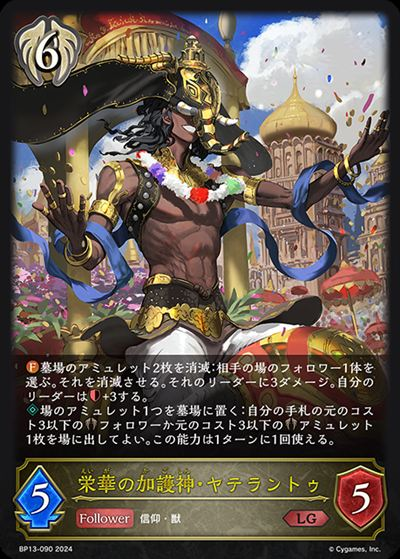
+1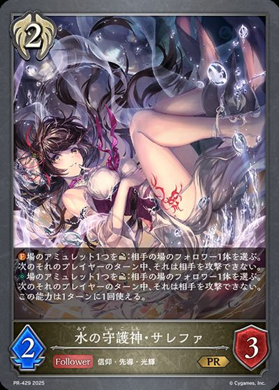
+1-3-2-1-1-1-1-1-1 +3
+3 +3+3+3+2+2+2+2-3-3-3-2-1-1-1+2+1+1+1+1+1+1-3-2-2-1-1-1+3+1+1+1-3-1-1-1+3+2+2+2+2+1+1+1+1+1-3-2-2-2-1-1-1-1+2
+3+3+3+2+2+2+2-3-3-3-2-1-1-1+2+1+1+1+1+1+1-3-2-2-1-1-1+3+1+1+1-3-1-1-1+3+2+2+2+2+1+1+1+1+1-3-2-2-2-1-1-1-1+2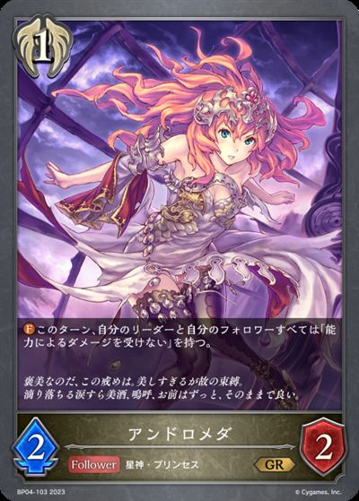
+2+2+2+2+2 +2+2
+2+2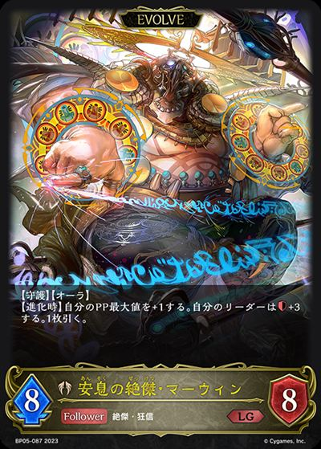
+1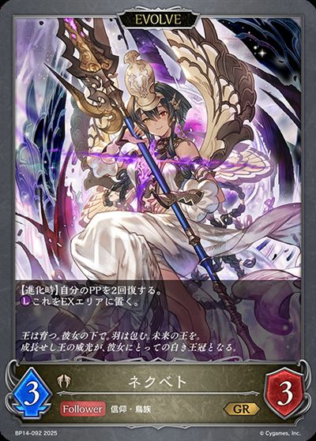
+1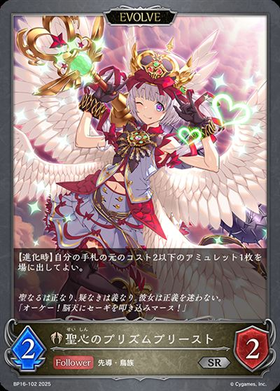
+1+1+1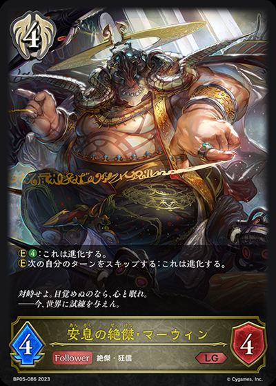
+1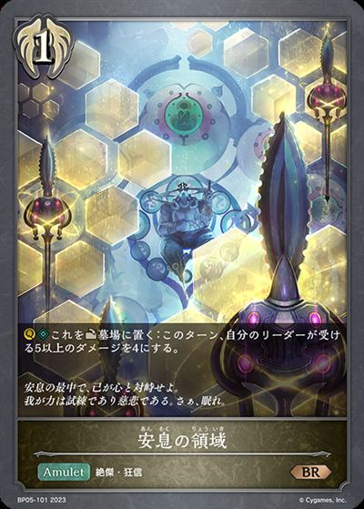
+1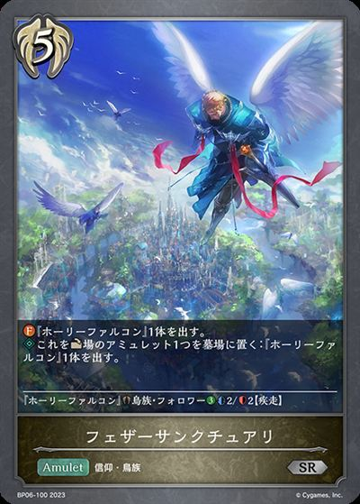
+1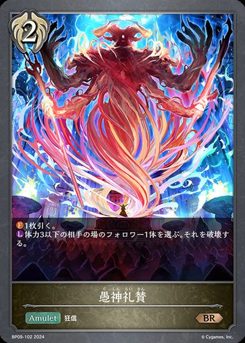
+1 +1
+1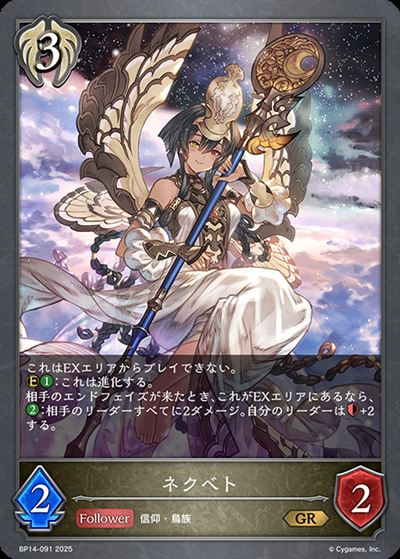
+1+1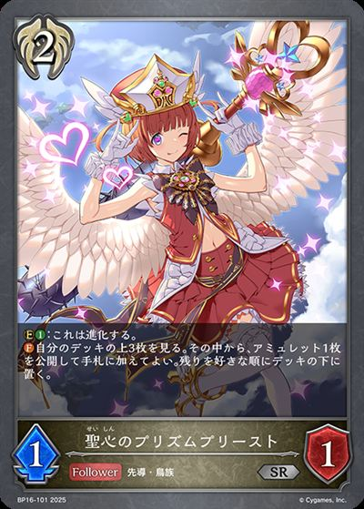
+1+1+1-3-3-3-3-3-3-3-2-2-2-1-1-1-1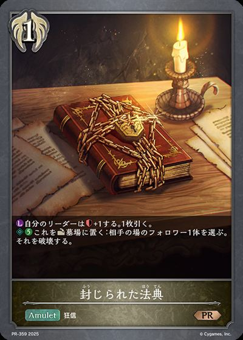
+3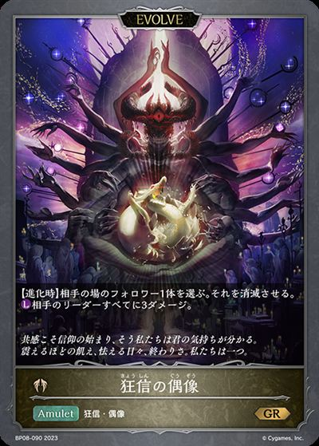
+2+2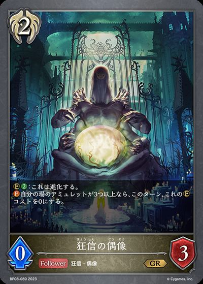
+2+2+2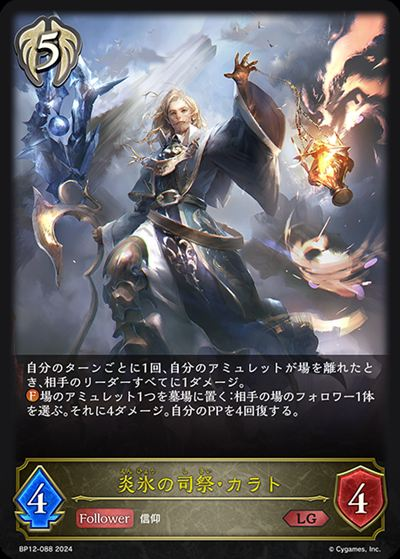
+2+1-3-3-3-3-2-1-1-1-1+1+1+1+1+1-1-1-3-3-3-3-2-1-1-1-1+1+1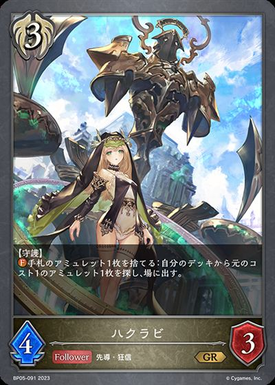
+1+1+1-1-1+1+1+3+3+3+2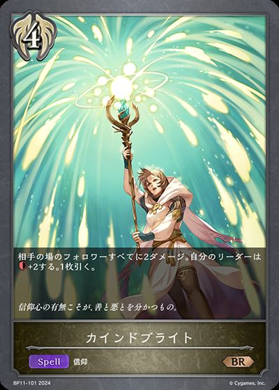
+2+2+2+1-3-3-3-2-1 +3+3+3
+3+3+3 +2+1+1+1+1+1-3-2-1-1-1-1-1
+2+1+1+1+1+1-3-2-1-1-1-1-1| 图片 | 平均张数 | 使用率 | 携带最好成绩 | 不携带最好成绩 | 1张比例 | 2张比例 | 3张比例 |
|---|---|---|---|---|---|---|---|
|
3.00 | 100.0% | 无 | 0.0% | 0.0% | 100.0% | |
| 2.97 | 100.0% | 无 | 0.0% | 3.1% | 96.9% | ||
|
2.91 | 96.9% | 0.0% | 0.0% | 96.9% | ||
|
2.81 | 96.9% | 0.0% | 9.4% | 87.5% | ||
|
2.75 | 96.9% | 3.1% | 9.4% | 84.4% | ||
|
2.53 | 90.6% | 6.3% | 6.3% | 78.1% | ||
| 2.53 | 90.6% | 0.0% | 18.8% | 71.9% | |||
|
2.63 | 87.5% | 0.0% | 0.0% | 87.5% | ||
| 2.44 | 87.5% | 3.1% | 12.5% | 71.9% | |||
| 2.31 | 87.5% | 3.1% | 25.0% | 59.4% | |||
|
0.84 | 84.4% | 84.4% | 0.0% | 0.0% | ||
|
2.22 | 81.3% | 3.1% | 15.6% | 62.5% | ||
|
1.44 | 50.0% | 0.0% | 6.3% | 43.8% | ||
|
0.78 | 50.0% | 31.3% | 9.4% | 9.4% | ||
|
0.50 | 43.8% | 37.5% | 6.3% | 0.0% | ||
| 0.50 | 40.6% | 31.3% | 9.4% | 0.0% | |||
|
0.66 | 37.5% | 18.8% | 9.4% | 9.4% | ||
| 0.72 | 34.4% | 3.1% | 25.0% | 6.3% | |||
| 0.56 | 31.3% | 12.5% | 12.5% | 6.3% | |||
|
0.28 | 28.1% | 28.1% | 0.0% | 0.0% | ||
|
0.25 | 25.0% | 25.0% | 0.0% | 0.0% | ||
| 0.63 | 21.9% | 0.0% | 3.1% | 18.8% | |||
|
0.22 | 21.9% | 21.9% | 0.0% | 0.0% | ||
| 0.31 | 15.6% | 0.0% | 15.6% | 0.0% | |||
| 0.19 | 12.5% | 6.3% | 6.3% | 0.0% | |||
|
0.13 | 12.5% | 12.5% | 0.0% | 0.0% | ||
| 0.13 | 12.5% | 12.5% | 0.0% | 0.0% | |||
|
0.22 | 9.4% | 0.0% | 6.3% | 3.1% | ||
| 0.16 | 9.4% | 3.1% | 6.3% | 0.0% | |||
| 0.16 | 9.4% | 6.3% | 0.0% | 3.1% | |||
| 0.13 | 9.4% | 6.3% | 3.1% | 0.0% | |||
| 0.19 | 6.3% | 0.0% | 0.0% | 6.3% | |||
|
0.16 | 6.3% | 0.0% | 3.1% | 3.1% | ||
|
0.16 | 6.3% | 0.0% | 3.1% | 3.1% | ||
| 0.13 | 6.3% | 0.0% | 6.3% | 0.0% | |||
| 0.13 | 6.3% | 0.0% | 6.3% | 0.0% | |||
|
0.09 | 6.3% | 3.1% | 3.1% | 0.0% | ||
| 0.09 | 6.3% | 3.1% | 3.1% | 0.0% | |||
| 0.09 | 6.3% | 3.1% | 3.1% | 0.0% | |||
|
0.09 | 6.3% | 3.1% | 3.1% | 0.0% | ||
| 0.09 | 6.3% | 3.1% | 3.1% | 0.0% | |||
| 0.06 | 6.3% | 6.3% | 0.0% | 0.0% | |||
|
0.06 | 6.3% | 6.3% | 0.0% | 0.0% | ||
| 0.06 | 6.3% | 6.3% | 0.0% | 0.0% | |||
|
0.09 | 3.1% | 0.0% | 0.0% | 3.1% | ||
|
0.09 | 3.1% | 0.0% | 0.0% | 3.1% | ||
|
0.09 | 3.1% | 0.0% | 0.0% | 3.1% | ||
|
0.09 | 3.1% | 0.0% | 0.0% | 3.1% | ||
|
0.09 | 3.1% | 0.0% | 0.0% | 3.1% | ||
| 0.06 | 3.1% | 0.0% | 3.1% | 0.0% | |||
| 0.06 | 3.1% | 0.0% | 3.1% | 0.0% | |||
|
0.06 | 3.1% | 0.0% | 3.1% | 0.0% | ||
| 0.06 | 3.1% | 0.0% | 3.1% | 0.0% | |||
|
0.06 | 3.1% | 0.0% | 3.1% | 0.0% | ||
| 0.03 | 3.1% | 3.1% | 0.0% | 0.0% | |||
| 0.03 | 3.1% | 3.1% | 0.0% | 0.0% | |||
| 0.03 | 3.1% | 3.1% | 0.0% | 0.0% | |||
| 0.03 | 3.1% | 3.1% | 0.0% | 0.0% | |||
| 0.03 | 3.1% | 3.1% | 0.0% | 0.0% | |||
|
0.03 | 3.1% | 3.1% | 0.0% | 0.0% | ||
| 0.03 | 3.1% | 3.1% | 0.0% | 0.0% |
| 图片 | 平均张数 | 使用率 | 携带最好成绩 | 不携带最好成绩 | 1张比例 | 2张比例 | 3张比例 |
|---|---|---|---|---|---|---|---|
|
2.69 | 96.9% | 0.0% | 21.9% | 75.0% | ||
|
2.28 | 90.6% | 6.3% | 31.3% | 53.1% | ||
| 2.38 | 87.5% | 3.1% | 18.8% | 65.6% | |||
| 1.00 | 87.5% | 75.0% | 12.5% | 0.0% | |||
|
0.44 | 40.6% | 37.5% | 3.1% | 0.0% | ||
|
0.63 | 37.5% | 18.8% | 12.5% | 6.3% | ||
| 0.13 | 6.3% | 0.0% | 6.3% | 0.0% | |||
| 0.06 | 6.3% | 6.3% | 0.0% | 0.0% | |||
|
0.06 | 6.3% | 6.3% | 0.0% | 0.0% | ||
| 0.06 | 6.3% | 6.3% | 0.0% | 0.0% | |||
| 0.06 | 3.1% | 0.0% | 3.1% | 0.0% | |||
|
0.06 | 3.1% | 0.0% | 3.1% | 0.0% | ||
| 0.03 | 3.1% | 3.1% | 0.0% | 0.0% | |||
| 0.03 | 3.1% | 3.1% | 0.0% | 0.0% |